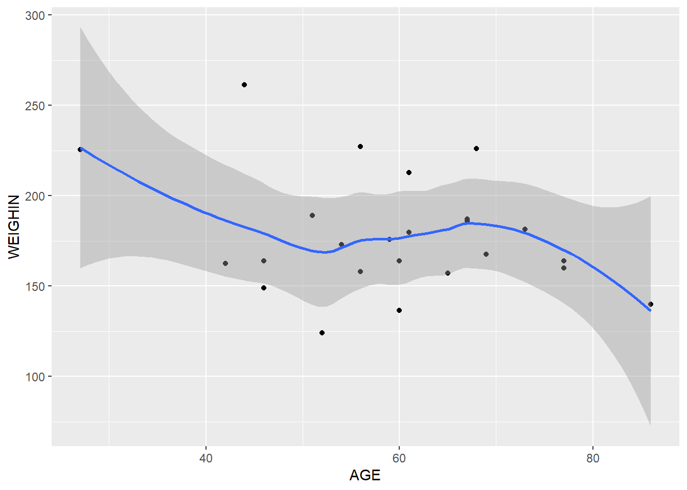

9 Intro to machine learning
library(tidyverse)
library(tidymodels)
read_abcd <- function(abcd_path){
suppressMessages({
abcd_path %>%
read_delim() %>%
filter(row_number() != 1) %>%
type_convert()
})
}
df <- read_abcd('data/abcd_lpksad01.txt') %>%
rename(grade_drop = kbi_p_c_drop_in_grades_l) %>%
filter(grade_drop %in% c(1, 2)) %>%
mutate(grade_drop = factor(grade_drop, levels = c(1, 2), labels = c('yes', 'no'))) %>%
group_by(subjectkey) %>%
filter(interview_age == min(interview_age))
df %>%
group_by(grade_drop) %>%
count()## # A tibble: 2 x 2
## # Groups: grade_drop [2]
## grade_drop n
## <fct> <int>
## 1 yes 1320
## 2 no 9033names(df)## [1] "collection_id" "abcd_lpksad01_id"
## [3] "dataset_id" "subjectkey"
## [5] "src_subject_id" "interview_age"
## [7] "interview_date" "sex"
## [9] "eventname" "kbi_l_p_select_language___1"
## [11] "kbi_p_c_live_full_time_l" "kbi_p_c_guard_l___1"
## [13] "kbi_p_c_guard_l___2" "kbi_p_c_guard_l___3"
## [15] "kbi_p_c_guard_l___4" "kbi_p_c_guard_l___5"
## [17] "kbi_p_c_guard_l___6" "kbi_p_c_guard_l___7"
## [19] "kbi_p_c_guard_l___8" "kbi_p_c_guard_l___9"
## [21] "kbi_p_c_guard_l___10" "kbi_p_c_guard_l___11"
## [23] "kbi_p_c_guard_l___12" "kbi_p_c_guard_l___0"
## [25] "kbi_p_conflict_l" "kbi_p_conflict_causes_l___1"
## [27] "kbi_p_conflict_causes_l___2" "kbi_p_conflict_causes_l___3"
## [29] "kbi_p_conflict_causes_l___4" "kbi_p_conflict_causes_l___5"
## [31] "kbi_p_conflict_causes_l___6" "kbi_p_conflict_causes_l___7"
## [33] "kbi_p_conflict_causes_l___8" "kbi_p_conflict_causes_l___9"
## [35] "kbi_p_conflict_causes_l___0" "kbi_p_c_school_setting_l"
## [37] "kbi_p_how_well_c_school_l" "kbi_p_grades_in_school_l"
## [39] "grade_drop" "kbi_p_c_spec_serv_l___1"
## [41] "kbi_p_c_spec_serv_l___2" "kbi_p_c_spec_serv_l___3"
## [43] "kbi_p_c_spec_serv_l___4" "kbi_p_c_spec_serv_l___5"
## [45] "kbi_p_c_spec_serv_l___6" "kbi_p_c_spec_serv_l___7"
## [47] "kbi_p_c_spec_serv_l___8" "kbi_p_c_spec_serv_l___9"
## [49] "kbi_p_c_spec_serv_l___10" "kbi_p_c_det_susp_l"
## [51] "kbi_p_c_det_reason_l___1" "kbi_p_c_det_reason_l___2"
## [53] "kbi_p_c_det_reason_l___3" "kbi_p_c_det_reason_l___4"
## [55] "kbi_p_c_det_reason_l___5" "kbi_p_c_det_reason_l___6"
## [57] "kbi_p_c_det_reason_l___7" "kbi_p_c_det_reason_l___999"
## [59] "kbi_p_c_det_reason_l___888" "kbi_p_c_det_reason_l___8"
## [61] "kbi_p_c_best_friend_l" "kbi_p_c_best_friend_len_l"
## [63] "kbi_p_c_reg_friend_group_l" "kbi_p_c_reg_friend_group_len_l"
## [65] "kbipcregfriend_groupopin_l" "kbi_p_c_bully_l"
## [67] "kbi_p_c_gay_l" "kbi_p_c_gay_problems_l"
## [69] "kbi_p_c_trans_l" "kbi_p_c_trans_problems_l"
## [71] "kbi_p_c_mh_sa_l" "kbi_p_c_age_services_l"
## [73] "kbi_p_c_age_services_dk" "kbipcserviceschecklistl1"
## [75] "kbipcserviceschecklistl2" "kbipcserviceschecklistl3"
## [77] "kbipcserviceschecklistl4" "kbipcserviceschecklistl5"
## [79] "kbipcserviceschecklistl6" "kbipcserviceschecklistl7"
## [81] "kbipcserviceschecklistl8" "kbipcserviceschecklistl9"
## [83] "kbipcserviceschecklistl10" "kbi_p_c_mental_health_l"
## [85] "kbi_ss_c_mental_health_p_l" "kbi_p_c_mental_health_dk_l"
## [87] "kbi_p_c_substance_abuse_l" "kbi_ss_c_substance_abuse_p_l"
## [89] "kbi_p_c_substance_abuse_dk_l" "collection_title"library(tidymodels)
df_split <- initial_split(df, prop = .80)
df_split## <Analysis/Assess/Total>
## <8282/2071/10353>df_split %>%
training()## # A tibble: 8,282 x 90
## # Groups: subjectkey [8,282]
## collection_id abcd_lpksad01_id dataset_id subjectkey src_subject_id interview_age
## <dbl> <dbl> <dbl> <chr> <chr> <dbl>
## 1 2573 30485 47218 NDAR_INV898~ NDAR_INV898CW~ 143
## 2 2573 25452 47218 NDAR_INV2RE~ NDAR_INV2REKB~ 125
## 3 2573 43922 47218 NDAR_INVNC2~ NDAR_INVNC2BC~ 131
## 4 2573 34710 47218 NDAR_INVC2V~ NDAR_INVC2VA4~ 135
## 5 2573 47128 47218 NDAR_INVRBP~ NDAR_INVRBPWC~ 138
## 6 2573 40861 47218 NDAR_INVLZB~ NDAR_INVLZBR5~ 124
## 7 2573 28787 47218 NDAR_INV6L0~ NDAR_INV6L032~ 132
## 8 2573 48782 47218 NDAR_INVXUP~ NDAR_INVXUPME~ 125
## 9 2573 42147 47218 NDAR_INVMWH~ NDAR_INVMWH0M~ 143
## 10 2573 40063 47218 NDAR_INVK5M~ NDAR_INVK5MXZ~ 125
## # ... with 8,272 more rows, and 84 more variables: interview_date <chr>, sex <chr>,
## # eventname <chr>, kbi_l_p_select_language___1 <dbl>,
## # kbi_p_c_live_full_time_l <dbl>, kbi_p_c_guard_l___1 <dbl>,
## # kbi_p_c_guard_l___2 <dbl>, kbi_p_c_guard_l___3 <dbl>, kbi_p_c_guard_l___4 <dbl>,
## # kbi_p_c_guard_l___5 <dbl>, kbi_p_c_guard_l___6 <dbl>, kbi_p_c_guard_l___7 <dbl>,
## # kbi_p_c_guard_l___8 <dbl>, kbi_p_c_guard_l___9 <dbl>, kbi_p_c_guard_l___10 <dbl>,
## # kbi_p_c_guard_l___11 <dbl>, kbi_p_c_guard_l___12 <dbl>, ...df_recipe <- df_split %>%
training() %>%
recipe(grade_drop ~ .) %>%
step_rm(ends_with('id') | matches('subjectkey')) %>%
step_filter_missing(all_predictors(), threshold = 0) %>%
step_nzv(all_predictors()) %>%
step_corr(all_numeric_predictors(), threshold = .50) %>%
prep()
df_recipe## Recipe
##
## Inputs:
##
## role #variables
## outcome 1
## predictor 89
##
## Training data contained 8282 data points and 8282 incomplete rows.
##
## Operations:
##
## Variables removed collection_id, abcd_lpksad01_id, dataset_id, src_subject_id, ... [trained]
## Missing value column filter removed kbi_p_c_best_friend_len_l, kbi_p_c_reg_friend_g... [trained]
## Sparse, unbalanced variable filter removed kbi_p_c_guard_l___1, kbi_p_c_guard_l___2, kbi... [trained]
## Correlation filter on kbi_p_conflict_causes_l___4, kbi_p_conflict_cau... [trained]df_training <- df_recipe %>%
juice()
df_testing <- df_recipe %>%
bake(testing(df_split)) %>%
filter(complete.cases(.))
df_testing## # A tibble: 2,044 x 20
## interview_age interview_date sex eventname kbi_l_p_select_l~ kbi_p_c_live_ful~
## <dbl> <fct> <fct> <fct> <dbl> <dbl>
## 1 135 03/22/2018 M 1_year_foll~ 0 0
## 2 137 11/17/2018 F 1_year_foll~ 1 1
## 3 127 08/05/2018 M 1_year_foll~ 0 1
## 4 137 05/20/2019 F 1_year_foll~ 0 1
## 5 135 03/23/2018 F 1_year_foll~ 0 1
## 6 127 10/29/2019 F 1_year_foll~ 0 1
## 7 124 03/22/2019 M 1_year_foll~ 0 0
## 8 144 08/17/2019 M 1_year_foll~ 0 1
## 9 144 04/11/2019 M 1_year_foll~ 0 1
## 10 119 01/04/2019 M 1_year_foll~ 0 1
## # ... with 2,034 more rows, and 14 more variables: kbi_p_conflict_causes_l___2 <dbl>,
## # kbi_p_c_school_setting_l <dbl>, kbi_p_grades_in_school_l <dbl>,
## # kbi_p_c_spec_serv_l___4 <dbl>, kbi_p_c_spec_serv_l___7 <dbl>,
## # kbi_p_c_spec_serv_l___8 <dbl>, kbi_p_c_spec_serv_l___9 <dbl>,
## # kbi_p_c_det_susp_l <dbl>, kbi_p_c_best_friend_l <dbl>, kbi_p_c_bully_l <dbl>,
## # kbi_p_c_gay_l <dbl>, kbi_p_c_mh_sa_l <dbl>, kbipcserviceschecklistl1 <dbl>,
## # grade_drop <fct>df_ranger <- rand_forest(trees = 100, mode = 'classification') %>%
set_engine('ranger') %>%
fit(grade_drop ~ ., data = df_training)
df_ranger## parsnip model object
##
## Ranger result
##
## Call:
## ranger::ranger(x = maybe_data_frame(x), y = y, num.trees = ~100, num.threads = 1, verbose = FALSE, seed = sample.int(10^5, 1), probability = TRUE)
##
## Type: Probability estimation
## Number of trees: 100
## Sample size: 8282
## Number of independent variables: 19
## Mtry: 4
## Target node size: 10
## Variable importance mode: none
## Splitrule: gini
## OOB prediction error (Brier s.): 0.09951642df_ranger %>%
predict(df_testing) %>%
bind_cols(df_testing)## # A tibble: 2,044 x 21
## .pred_class interview_age interview_date sex eventname kbi_l_p_select_lang~
## <fct> <dbl> <fct> <fct> <fct> <dbl>
## 1 no 135 03/22/2018 M 1_year_follow_~ 0
## 2 no 137 11/17/2018 F 1_year_follow_~ 1
## 3 no 127 08/05/2018 M 1_year_follow_~ 0
## 4 no 137 05/20/2019 F 1_year_follow_~ 0
## 5 no 135 03/23/2018 F 1_year_follow_~ 0
## 6 no 127 10/29/2019 F 1_year_follow_~ 0
## 7 no 124 03/22/2019 M 1_year_follow_~ 0
## 8 no 144 08/17/2019 M 1_year_follow_~ 0
## 9 no 144 04/11/2019 M 1_year_follow_~ 0
## 10 no 119 01/04/2019 M 1_year_follow_~ 0
## # ... with 2,034 more rows, and 15 more variables: kbi_p_c_live_full_time_l <dbl>,
## # kbi_p_conflict_causes_l___2 <dbl>, kbi_p_c_school_setting_l <dbl>,
## # kbi_p_grades_in_school_l <dbl>, kbi_p_c_spec_serv_l___4 <dbl>,
## # kbi_p_c_spec_serv_l___7 <dbl>, kbi_p_c_spec_serv_l___8 <dbl>,
## # kbi_p_c_spec_serv_l___9 <dbl>, kbi_p_c_det_susp_l <dbl>,
## # kbi_p_c_best_friend_l <dbl>, kbi_p_c_bully_l <dbl>, kbi_p_c_gay_l <dbl>,
## # kbi_p_c_mh_sa_l <dbl>, kbipcserviceschecklistl1 <dbl>, grade_drop <fct>df_ranger %>%
predict(df_testing) %>%
bind_cols(df_testing) %>%
metrics(truth = grade_drop, estimate = .pred_class)## # A tibble: 2 x 3
## .metric .estimator .estimate
## <chr> <chr> <dbl>
## 1 accuracy binary 0.879
## 2 kap binary 0.104df_ranger %>%
predict(df_testing, type = 'prob') %>%
bind_cols(df_testing) %>%
roc_curve(truth = grade_drop, estimate = .pred_yes) %>%
autoplot()